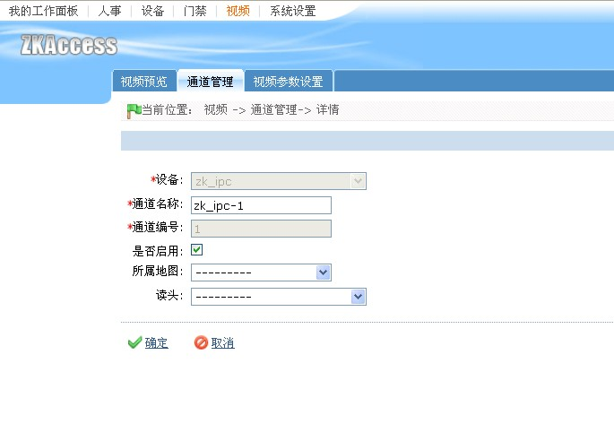
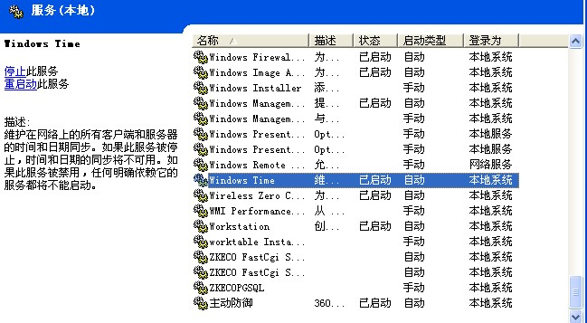
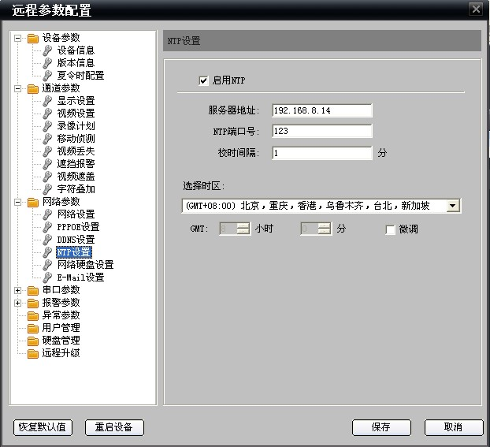

首先需要将视频通道与需要设置联动的门绑定，可在门编辑页面设置门读头与视频通道的绑定，详情见“门管理”帮助页面。也可以在【通道管理】绑定视频通道与门读头。
视频通道管理界面设置视频通道与门读头绑定的操作流程：
【视频】—>【通道管理】，然后选择要设置与门读头绑定的视频通道进行编辑，如下图所示：

视频联动设置方法与门控制器的联动设置一样，选择触发条件和输入点地址，在联动设置页面勾选相应的视频联动动作。请参考门禁联动设置。
时间同步服务器（Timeserver）设置:
Timeserver功能主要是保证视频服务器与软件服务器时间同步，避免因时间不同步影响影响相关功能。
装有本软件的计算机，已经具有Timeserver功能，只需设置相关信息即可使用。设置方法如下：
1. 在安装软件的服务器上，启动系统服务Windows Time，并设置启动类型为自动，如下图所示：

2.设置视频服务器的NTP功能，可以在视频服务器中直接设置，也可以通过浏览器访问视频服务器，在Web页面设置。如下图：

上图中的“服务器地址”即为软件服务器的IP地址，“NTP端口号”默认123，不需要修改，“校时间隔”建议设置小一点(比如1分钟校时一次)，确保视频服务器与软件服务器的时间精确同步。保存参数，重启视频服务器即可。